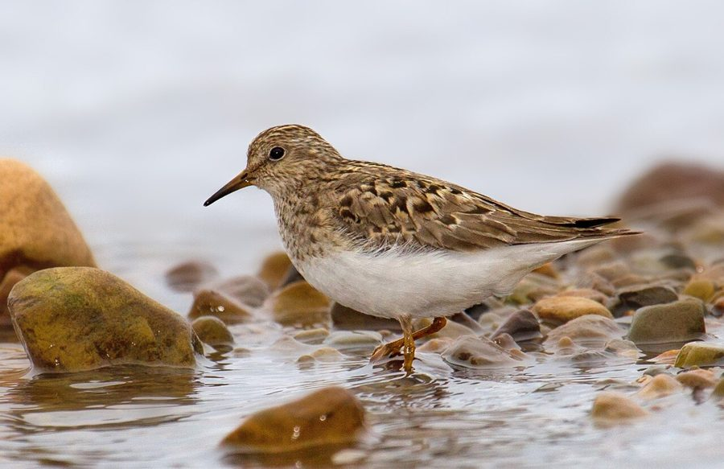

टेमिंक स्टिंटTemminck's Stint
Calidris temminckii · Scolopacidae · BRD-0133

- Scientific name वैज्ञानिक नाम
- Calidris temminckii (Leisler, 1812)
- Family कुल
- Scolopacidae
- Hindi हिंदी
- टेमिंक स्टिंट
- Local names स्थानीय नाम
- temmincks stint, temminck stint, stint, temink stint
- Status here यहाँ की स्थिति
- native
- Movement आवागमन
- Winter visitor
- IUCN IUCN
- LC
- Review समीक्षा
- audited and independently read
When to look कब देखें
Winter visitor शीतकालीन प्रवासी. Expected mainly in August, September, October, November, December, January, February, March, April, May. मुख्यतः अगस्त, सितंबर, अक्टूबर, नवंबर, दिसंबर, जनवरी, फ़रवरी, मार्च, अप्रैल, मई में अपेक्षित।
Arrives in August–September from tundra breeding grounds; departs by May. Expected on mudflats, tank margins, and river embankments across eastern UP. Documented in Ayodhya wetlands surveys. All migrants and visitors →
Tell it apart from इनसे अलग पहचानें
टेमिंक स्टिंट / Temminck's Stint
Calidris temminckii (Leisler, 1812) — Scolopacidae
टेमिंक स्टिंट — साइबेरिया और आर्कटिक टुंड्रा से सर्दियों में आने वाली सबसे छोटी रेतीली चिड़िया। इसका आकार और रंग इसे पहचानना मुश्किल बनाता है, लेकिन इसकी नोकदार गर्दन और पतली टाँगें इसे अलग करती हैं। पूर्वी उत्तर प्रदेश में यह अगस्त से मई तक तालाबों के किनारों पर दिखाई देती है, और अकेले या छोटे समूहों में तेजी से दौड़ते हुए भोजन खोजती है।
Quick Identification त्वरित पहचान
| Feature | Description |
|---|---|
| Size | Very small wader; 13–14 cm long; one of smallest |
| Build | Compact, hunched posture; short neck |
| Plumage | Greyish-brown above; white underparts; finely streaked breast |
| Legs | Yellowish-brown to greenish; short and fine |
| Bill | Short, fine, slightly drooped; black with pale base |
| Behaviour | Runs rapidly with hunched posture; solitary or small groups |
| Rump | Dark, less obvious than Ruff's white patch |
Field tip: The smallest stint in eastern UP, with a hunched, rapid-running gait like a sandpiper. The short bill and legs are key; yellowish legs and fine, down-curved bill separate it from Little Stint. Usually solitary or in pairs, unlike the gregarious Little Stint.
हिंदी — कैसे पहचानें:
सबसे छोटी सैंडपाइपर; झुका हुआ मुद्रा।
सूक्ष्म चोंच; पीली-भूरी टाँगें।
तेजी से दौड़ती है; अकेले दिखती है।
छाती पर हल्के धब्बे।
Morphology आकारिकी
Biometrics:
| Measurement | Range |
|---|---|
| Total length | 130–150 mm |
| Wing | 85–95 mm |
| Tail | 40–50 mm |
| Bill | 13–16 mm |
| Tarsus | 15–18 mm |
| Weight | 18–30 g |
Size: 13–14 cm long; one of the smallest sandpipers in the world.
Plumage: Greyish-brown above with darker centres to feathers. Crown and nape darker. Lores whitish. Underparts white. Breast finely streaked with grey. Flanks white or slightly washed with buff. Rump dark.
Bill: Short, fine, and slightly drooped; black with pale base; specialized for picking small insects from mud.
Legs and feet: Short, yellowish-brown to greenish; set far forward on body, giving hunched appearance.
Rump: Dark; lacks the distinctive white oval patch of Ruff.
Sexes: Sexes similar; females slightly larger.
Vocalisations. Call repertoire:
- Contact call: A soft, rolling trr-it or prip, repeated.
- Alarm call: A sharper keew when flushed.
- Flight calls: Twittering and rolling sounds in flocks.
हिंदी: कोमल ट्रिप-ट्रिप आवाज़। डर पर तीक्ष्ण चिल्लाहट।
Behaviour & Ecology व्यवहार और पारिस्थितिकी
Gleaner: Temminck's Stint feeds on mudflats and embankments by walking and picking small insects from the surface and shallow probing. They feed on:
- Small crustaceans and amphipods
- Aquatic insect larvae (chironomids, mayflies)
- Small worms
- Seeds and plant fragments
Social behaviour: Solitary or in small groups, unlike most other stints which are gregarious. Males are territorial during breeding season and retain territories in wintering grounds.
Feeding time: Active throughout the day; crepuscular activity peaks at dawn and dusk but feeds in daylight hours.
Roost behaviour: Roosts on open mudflats or banks; less gregarious than other stints.
Predators: Marsh Harrier, Peregrine Falcon, hooded crows, and jackals may take adults. Chicks vulnerable in breeding grounds.
Habitat preference: Prefer margins of tanks and lakes with firm mud; less dependent on water level than other stints.
हिंदी: अकेले या छोटे समूह में देखते हैं। दिन भर सक्रिय; कीचड़ के किनारे खोज करते हैं। बहुत तेज दौड़ते हैं।
Life Cycle / Phenology जीवन चक्र
Winter visitor: Breeds in tundra of northern Siberia (May–July); absent during breeding season. Returns to eastern UP from August and remains through May, with peak numbers January–February.
Arrival and departure: First birds arrive in late August; numbers peak in January–February; most depart by April, with stragglers through May.
Courtship: Takes place on breeding grounds. Males perform display flights and calls.
Moult: Complete moult occurs twice yearly. Non-breeding plumage acquired before migration and worn throughout wintering.
Site fidelity: Many individuals return to the same wintering sites year after year.
हिंदी: अगस्त में आता है, मई तक रहता है। साइबेरिया में प्रजनन करता है। सर्दियों में एक ही जगह रहता है।
Host Plants or Prey आहार
| Food Type | Examples | Feeding Behaviour |
|---|---|---|
| Insect larvae | Chironomid, mayfly nymphs | Pick from mud surface and shallow probing |
| Small crustaceans | Amphipods, ostracods | Gleaned from mud |
| Small worms | Oligochaetes, nematodes | Picked from surface |
| Seeds | Grass and sedge seeds | Picked from dry areas |
| Small fish fry | Gobiids | Captured in very shallow water |
हिंदी: छोटे कीड़े और जानवर खाता है। कीचड़ से चुनकर भोजन निकालता है।
Predators / Natural Enemies शत्रु
- Avian predators: Marsh Harrier, Peregrine Falcon, hooded crow, Black-headed Gull
- Mammalian predators: Jackal, wild boar, mongoose
- Parasites: Feather mites, helminths
हिंदी: शिकारी चिड़ियाँ और छोटे जानवर इसका शिकार करते हैं।
Agricultural / Human Relevance कृषि प्रासंगिकता
Protected species: The Temminck's Stint is protected under the Wildlife (Protection) Act 1972 (Schedule IV, amended 2022). Hunting is illegal in India.
Wetland indicator: As a specialist feeder on small mudflat invertebrates, it indicates healthy, undisturbed wetland margins with appropriate water levels and soft substrate.
Habitat modification: Alterations to tank embankments and water-level manipulation can reduce suitable foraging habitat.
Historical records: Not mentioned in Mughal hunting records; too small to be of sporting interest.
Cultural value: Recognized by birdwatchers and naturalists as a charismatic and challenging winter visitor.
हिंदी: कानून से पूरी तरह सुरक्षित है। इसका शिकार करना कानूनी रूप से निषिद्ध है।
Expected Locally स्थानीय रूप से अपेक्षित
Not a field record. Written from published accounts for eastern Uttar Pradesh. No confirmed local sighting yet — if you have seen it, that is what the atlas needs.
अभी तक स्थानीय पुष्टि नहीं। यह विवरण प्रकाशित स्रोतों से है, किसी अवलोकन से नहीं।
Winter range: Expected in eastern Uttar Pradesh from August to May on mudflats and tank embankments. Documented in Ayodhya wetlands surveys (Yashmita-Ulman & Singh, 2022).
Habitat preference: Tank and lake margins with firm mud, river embankments, and embankments of reservoirs rich in small invertebrates.
Peak occurrence: January–February, when populations from central Asian breeding grounds have moved south.
Nearest published record: Recorded in Ayodhya District wetlands by Yashmita-Ulman & Singh (2022) as a winter visitor.
What a first record would be: A dated photograph showing the bird clearly on a mudflat or tank margin in a specific location (with GPS coordinates and date) submitted through the About page of this atlas. Size and fine bill are diagnostic features.
हिंदी: यह पक्षी स्थानीय रूप से अपेक्षित है, न कि देखे गए बतौर प्रेक्षण। अगस्त से मई तक तालाब के किनारे देखे जा सकते हैं। पहला रिकॉर्ड के लिए स्पष्ट फोटोग्राफ चाहिए।
Distribution वितरण
Global range: Breeds in Arctic tundra from northern Scandinavia to eastern Siberia. Winters across Europe, Africa, and Asia to Australia. Monotypic species.
In India: Distributed as a winter visitor across the subcontinent on wetlands, though less common than Little Stint.
In Uttar Pradesh: Winter visitor to wetlands, particularly in the eastern districts.
In Basti district / eastern UP: Regular winter visitor to tank margins and river embankments, documented in Ayodhya wetlands surveys.
Research Questions शोध प्रश्न
- What are the precise breeding grounds of the Temminck's Stint populations that winter in eastern UP? Do different populations winter in different parts of the region?
- क्या इस चिड़िया की सर्दियों की जगहें साल दर साल एक जैसी रहती हैं, या ये अलग-अलग तालाबों में चली जाती हैं?
- How does the diet composition of Temminck's Stint differ from Little Stint in the same wetland, and why does Temminck's prefer solitary foraging?
- What water-level fluctuations allow optimal foraging habitat for Temminck's Stint in tanks and reservoirs?
- How do Temminck's Stint populations in eastern UP compare in size and condition to those in other Indian wetlands? (A child can measure birds and tank water levels at the same site.)
- क्या टंकों के किनारों पर कीटनाशक का छिड़काव इस चिड़िया की संख्या में कमी लाता है?
Similar Species मिलती-जुलती प्रजातियाँ
| Species | Key Difference | Hindi | Field Rule |
|---|---|---|---|
| Little Stint (Calidris minuta) | Slightly larger; grey-brown above; more gregarious; reddish wash on crown and ear-coverts | लिटिल स्टिंट | Little Stint is marginally larger and more colourful with reddish ear-coverts; more often seen in flocks. Temminck's is more solitary and duller. |
| Least Sandpiper (Calidris minutilla) | Rare vagrant; yellowish legs; less drooped bill | लीस्ट सैंडपाइपर | Least Sandpiper has yellowish legs (not greenish) and straight bill. |
| Long-toed Stint (Calidris subminuta) | Longer toes and claws visible; slight buff wash on flanks; less common in UP | लॉंग-टोड स्टिंट | Long-toed Stint shows distinctly longer toes and visible claws. |
Field rule: Temminck's Stint is distinguished by its preference for solitary or small-group foraging, fine drooped bill, and yellowish-green legs. Little Stint is more gregarious, slightly larger, and has a more reddish ear-covert patch.
Taxonomy & Classification वर्गीकरण
Original description. The species was described by Leisler in 1812, originally in the genus Tringa. The genus was revised and the species moved to Calidris in the 1990s based on molecular evidence.
Subspecies. Monotypic — no subspecies are currently recognised.
Family and order placement. Order Charadriiformes; family Scolopacidae. The genus Calidris contains many small migratory sandpipers.
Phylogenetic notes. Closely related to Little Stint (C. minuta); the two species form a sister pair within the genus Calidris.
IUCN status rationale. The species is assessed as Least Concern (LC) globally. Populations are stable and widely distributed. Adaptable to various wetland habitats. In India, protected under the Wildlife Protection Act 1972 (Schedule IV).
हिंदी: विश्वभर में पाया जाता है। भारत में सर्दियों में आता है। कानून से सुरक्षित है।
Photo Gallery फोटो गैलरी
No photos yet — add field photos to media/species/temmincks_stint/ and run node scripts/sync_photos.js.
Wanted photos:
- Non-breeding plumage on mudflat
- Running behaviour
- In flight for size comparison
- Detail of bill and legs
- At roost site
References संदर्भ
- Leisler, J. F. W. (1812). In Namensverzeichniss der Vögel Europas [cited in Cramp & Simmons 1983].
- Ali, S. & Ripley, S. D. (1968). Handbook of the Birds of India and Pakistan. Vol. 2 (Waders to Owls). Oxford University Press, Delhi. Pp. 152–154.
- Grimmett, R., Inskipp, C. & Inskipp, T. (2011). Birds of the Indian Subcontinent (2nd edn). Oxford University Press, Delhi. Pp. 130–131.
- Cramp, S. & Simmons, K. E. L. (1983). Handbook of the Birds of Europe, the Middle East and North Africa: The Birds of the Western Palearctic. Vol. 3 (Waders to Gulls). Oxford University Press. Pp. 556–573.
- Yashmita-Ulman & Singh, M. (2022). Avifaunal diversity in unprotected wetlands of Ayodhya District, Uttar Pradesh, India. Journal of Threatened Taxa 14(8): 21561–21578.
- GBIF Occurrence Data — Calidris temminckii, India (2024).
Source file: species/fauna/birds/temmincks_stint.md